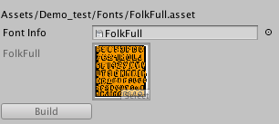
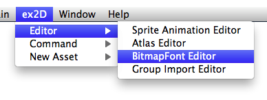

Overview
The Font Editor in ex2D allows you import the font information made by Hiero (Mac) and BMFont (Windows), build the Bitmap Font Asset for final Game.
Create New BitmapFont
Before create a BitmapFont Asset, you need to import/put Font Info exported from Hiero or BMFont. The exported Font Info includes:
- A Font Image: the texture stores all character you exported
- A txt/fnt File: a text file describe the information of each character in the image
 Note: You must save the image as PNG file format, and save the text file as txt/fnt file format.
Note: You must save the image as PNG file format, and save the text file as txt/fnt file format.
Select the txt/fnt font info file in Project Window. Right click the selected file to popup the Menu. Choose Create → ex2D BitmapFont.
{kind=link}
You will see a wizard popup help you create an BitmapFont:
{kind=link}
| Option | Explanation |
|---|---|
| Saved Path | The saved directory path |
| Asset Name | The saved name of the new asset |
Click the Create button to create a new BitmapFont Asset.
Once you create the BitmapFont Asset, the Editor will show the data like this:

Open BitmapFont Editor
The BitmapFont Editor can be opened from the ex2D→Editor→BitmapFont Editor menu.

You can also open the atlas editor by select an Bitmap Font you created, and click the Edit… button in the Inspector.
Create Atlas Font
You can directly use BitmapFont above. When you have 2 BitmapFont assets used in your game, they are in separated textures, so the draw call become two. If your BitmapFont renderer use the same material settings but just different texture, it is too waste to put them in 2 textures. For the reason to save draw call and save the size of texture, it is nice to put multiple BitmapFont in one texture, we call this Atlas Font.
To create an Atlas Font, just follow the steps:
- Create your BitmapFont assets by following the last section
- Create a new Atlas Asset or open an exists one in Atlas Editor
- Select the BitmapFont assets in Project Window, and drag them into the Atlas Editor
- Apply changes in Atlas Editor and Build the Atlas Asset
- You will find the new BitmapFont asset created in the same folder of Atlas. If your Atlas named FooBar, your BitmapFont asset named Hello, the Atlas Font will named FooBar - Hello.asset